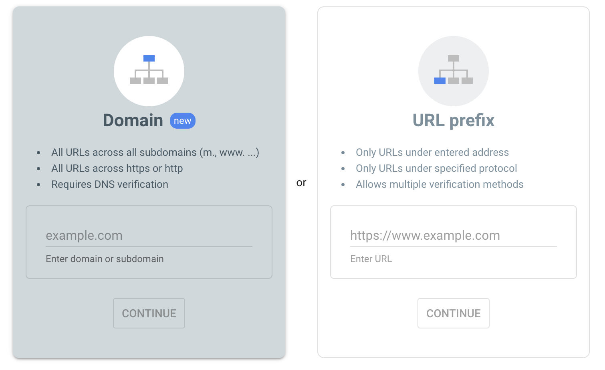
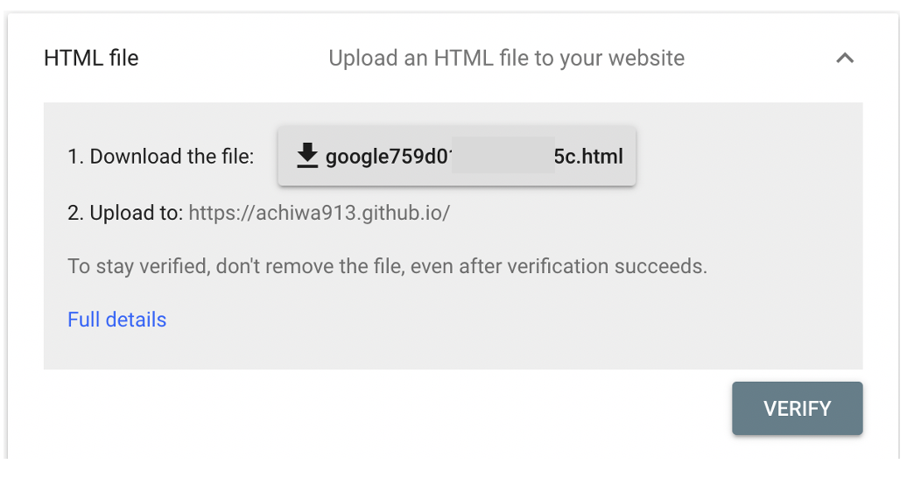
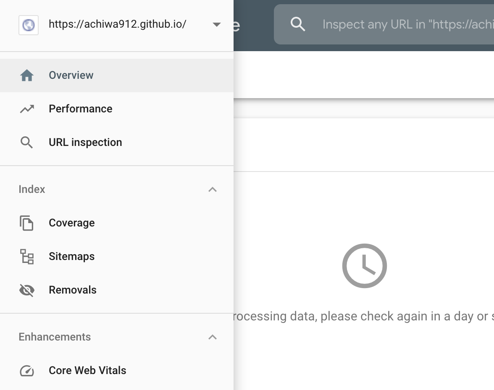
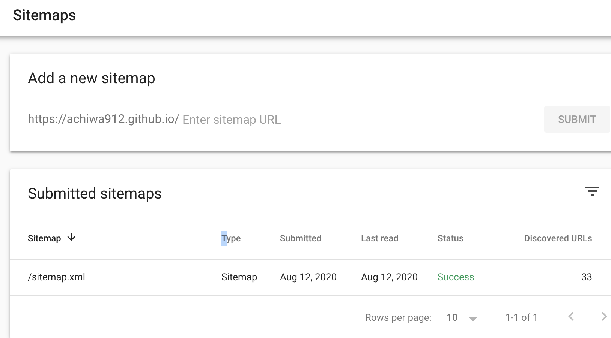

Table of Contents
1 はじめに
ブログは作りましたが、検索エンジンがまだ私のブログの存在を認識していないので、訪問者数は自分を除くとゼロの記録を更新中です。とても寂しいので、いつもお世話になっているgoogleに認識していただくことにしました。それでも3ヶ月〜半年くらいは寂しい状況が続くようですが。。。
今回は短い単発ネタな上に、pelicanサイトジェネレーター + github pagesでブログを公開している私の環境を前提に書いているので、ほとんど参考にならないかもしれません。まあ、訪問者数ゼロなので実害は無いでしょうか。
2 Google Search Console
何はともあれ、"google search console"をgoogleで検索して(ここからです 笑)、サイトに行ってみます。
https://search.google.com/search-console/welcome
2.1 サイトを登録する
お持ちのgoogleアカウントでログインしている場合、以下のような画面が出るので、右側の入力欄に自分のサイトのURLを入れてcontinueを押します。

するとgoogle*****.htmlというファイルをダウンロードして自分のサイトのトップにアップロードせよ、と言ってきます。

もちろん、言われたとおりにします。私の場合はPelicanという静的サイトジェネレーターを使っているので、参考にならないかもしれませんが、その手順を書くと、
- <blog folder>/output/にgoogle****.htmlファイルを置く
- 以下を実行して変更をプッシュする
ghp-import output git push https://github.com/achiwa912/achiwa912.github.io.git gh-pages:master
無事にgoogle****.htmlファイルがプッシュされた気がします。
そして、先ほどの画面でverifyをクリックすると、googleが私のサイトを認識してくれました。
2.2 サイトマップを登録する
なんだか、いろいろググっていると、google search consoleに登録しただけでは駄目で、更にsitemapなるものを用意しないといけないようです。これがあると、googleのcrawlerが優先的に見に来てくれるという噂です。取りこぼしが無いように、サイトの構造を教えているだけな気もしますが。。。
Pelicanには簡単にsitemapを出力できるプラグインが用意されています。以下のようにpalicanconf.pyを変更するだけなのですが、SITEURL変数を設定するとローカルでの作業時にリンクがgithub.ioを見に行ってしまうという副作用が出てしまいました。
逆にSITEURLを設定しないと、生成されるsitemap.xmlのURLが相対アドレスになってしまい、google search consoleが読めずにエラーとなってしまいます。
PLUGINS = ['org_reader', 'sitemap']
SITEMAP = {
'format': 'xml',
'priorities': {
'articles': 1,
'indexes': 0.5,
'pages': 0.5,
},
'changefreqs': {
'articles': 'always',
'indexes': 'hourly',
'pages': 'monthly'
}
}
SITEURL = 'https://achiwa912.github.io'
そこで解決策を1時間ほどググって、ようやく以下のページを見つけました。解決策を提示くださって、どうもありがとうございます。
pelicanでのSitemap.xmlの生成方法 https://github.com/getpelican/pelican/wiki/Tips-n-Tricks#generate-sitemapxml
まずは、使用しているテーマのtemplatesディレクトリにsitemap.htmlとして以下のファイルを作成します。私の環境では: themes/pelican-octopress-theme-master/templates/sitemap.html
<?xml version="1.0" encoding="UTF-8"?>
<urlset xmlns="http://www.sitemaps.org/schemas/sitemap/0.9">
{% for article in articles %}
<url>
<loc>{{ ROOTURL }}/{{ article.url }}</loc>
<priority>0.8</priority>
</url>
{% for translation in article.translations %}
<url>
<loc>{{ ROOTURL }}/{{ translation.url }}</loc>
<priority>0.8</priority>
</url>
{% endfor %}
{% endfor %}
{% for page in pages %}
<url>
<loc>{{ ROOTURL }}/{{ page.url }}</loc>
<priority>1.0</priority>
</url>
{% for translation in page.translations %}
<url>
<loc>{{ ROOTURL }}/{{ translation.url }}</loc>
<priority>1.0</priority>
</url>
{% endfor %}
{% endfor %}
</urlset>
そして、以下をpelicanconf.pyに追記します。
ROOTURL = 'https://achiwa912.github.io'
DIRECT_TEMPLATES = ('index', 'tags', 'categories', 'archives', 'sitemap')
SITEMAP_SAVE_AS = 'sitemap.xml'
pelicanコマンドでmakeして確認したところ、ちゃんとsitemap.xml内のURLは正しく設定されているようです。<loc>の行に注目。
<?xml version="1.0" encoding="UTF-8"?>
<urlset xmlns="http://www.sitemaps.org/schemas/sitemap/0.9">
<url>
<loc>https://achiwa912.github.io/googlesc.html</loc>
<priority>0.8</priority>
</url>
snip
ローカルでの作業時に、リンクはきちんとローカルのページに飛びます。うまく行きました。
これで先ほどと同じようにgithub pagesのサイトにプッシュします。
ghp-import output git push https://github.com/achiwa912/achiwa912.github.io.git gh-pages:master
最後にgoogle search consoleに登録します。 google search consoleの左上にある、3本横線のメニューアイコンをクリックし、sitemapsを選びます。

次の画面でEnter sitemap URLとあるところに、sitemap.xmlと入れてsubmitすると、Status: Successと出て、googleが当サイトの構造を認識してくれたようです。

3 終わりに
先ほど登録したばかりなので、まだ何の効果があったのかわかりません。いや、まだ無いはず。のんびりと待つことにします。